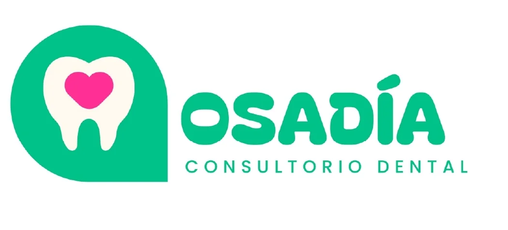
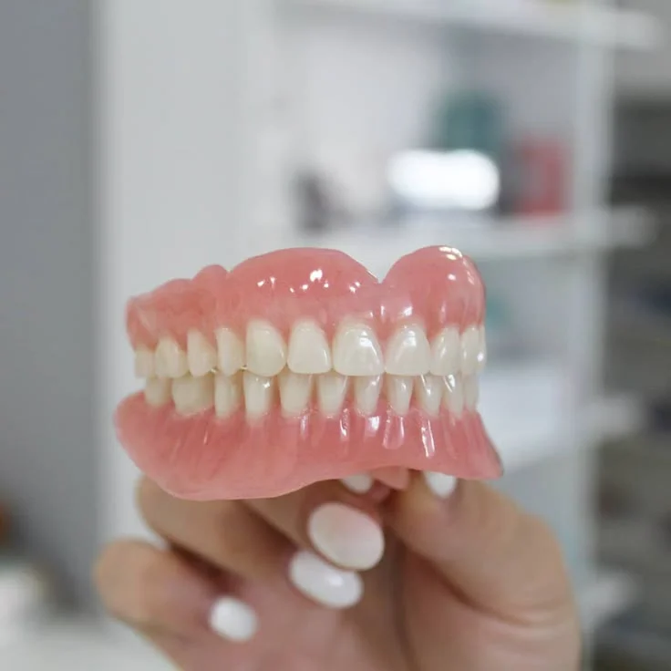

Coronas estéticas
Para dientes muy dañados o con endodoncia. Manejamos porcelana, zirconia y otras opciones que se ven muy naturales.
Recomendadas cuando quieres recuperar resistencia y estética en un solo diente.

Recupera tu sonrisa, tu mordida y tu confianza
✨ Especialistas en devolver sonrisas
En OSADÍA diseñamos coronas, puentes y prótesis personalizadas para que puedas volver a masticar bien, hablar con seguridad y sonreír sin pena.
Desde la primera cita te explicamos tus opciones, tiempos y costos con toda claridad, para que tomes la mejor decisión sin sorpresas.
Ideal si has perdido uno o varios dientes, tienes coronas viejas, puentes flojos o dificultad para masticar.
Opciones fijas o removibles según tu caso, tu presupuesto y lo que más te convenga.
Resultados naturales: cuidamos el color, forma y tamaño para que tu sonrisa luzca armoniosa.
Te damos diagnóstico y presupuesto por escrito en tu primera cita.

La prótesis y rehabilitación dental es para ti si:
Duración aproximada: de 2 a 4 citas según tu caso y número de piezas a rehabilitar.
Para dientes muy dañados o con endodoncia. Manejamos porcelana, zirconia y otras opciones que se ven muy naturales.
Recomendadas cuando quieres recuperar resistencia y estética en un solo diente.
Ideales cuando te falta uno o varios dientes seguidos. Van fijos, sin quitarlos y te permiten volver a masticar con seguridad.
Te explicamos si conviene más puente, implante o combinar opciones.
Una opción más económica y funcional cuando faltan varios dientes. Diseñadas para que ajusten cómodo y no se vean a simple vista.
Te enseñamos cómo colocarlas, retirarlas y cuidarlas correctamente.
Vemos tus estudios, revisamos tu mordida y te presentamos 2–3 opciones con ventajas, tiempos y costos, para que tú elijas qué es mejor para ti.
Dividimos tu tratamiento por etapas y te ayudamos a que el pago sea lo más cómodo posible. Pregunta por las opciones disponibles en tu cita.
Después de la colocación agendamos revisiones para asegurarnos de que muerdas cómodo. Si hace falta, ajustamos hasta que estés a gusto.
Buscamos que tus dientes se vean lo más naturales posible. Elegimos color, forma y tamaño para que armonicen con el resto de tu sonrisa y tu rostro.
Con buena higiene, revisiones periódicas y evitando morder cosas muy duras, tus coronas y prótesis pueden durar varios años. En la valoración te orientamos según tu caso.
Trabajamos con anestesia y técnicas para que estés lo más cómodo posible. La mayoría de las molestias son leves y temporales; antes de empezar te explicamos qué esperar.
Solo agenda tu valoración sin costo. Revisamos tu boca, vemos si necesitas radiografías y te entregamos un plan con pasos y presupuesto.
Estamos en Nezahualcóyotl. Agenda tu cita, platícanos qué te incomoda y armamos juntos un plan que se adapte a ti.